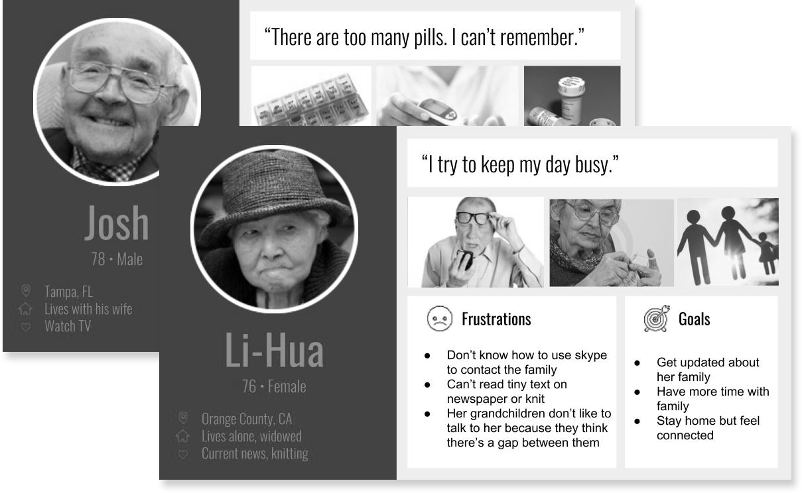

kasvi
A ubiquitous product design concept that initiates meaningful interactions between seniors and their loved ones beyond physical space
Project Type
Team project of integrated product design course
Role
I led and planned the entire UX research and design process in a team consisting of a industrial designer, an engineer and an MBA
Duration
Winter 2018 (3 months)
Skills
Empathy map, Storyboard, Concept testing, Card Sorting, Product Thinking, Product Fabrication, UI Design
Introduction
Design for the Coming Future
Background
As life expectancy sharply increases in developed countries, there are more than 30% of senior population lives alone in United States. However, physical degradation, cognitive impairment or social isolation might pose risk in their daily activities. Self care and social wellbeing have gained increasing importance in the life of seniors to live independently without worry and age with vitality.
My role
During my Integrated Product Design course, I was part of a team of 4 with students from industrial design, engineering and business school to design and market a product in a simulated market environment, which is very similar to running a startup and pitching our product in a kickstarter campaign at the end. I led the entire UX design and research process and involved in electronic prototyping, website design and marketing design for the final tradeshow.
Challenge
How might we support social wellbeing of the senior and enable them to live independently with confidence?
Product at a glance
Connections beyond Distance
Kasvi, a sleek home décor product, initiates meaningful interactions between seniors and their loved ones beyond physical space. During our research, we identified that social wellbeing of seniors has great demands, yet has less been addressed in the market. Empathizing with the target users, our design, kasvi, provides an ambient way to interact with each other at home through the hobby of gardening. It is the most-demanded product among 6 teams in the class voted by over 200 tradeshow visitors.
Design Process
Envision shipping product to the market
Competing in a simulated market space of 6 teams, we conducted rapid product development cycles from researching market potentials, validating design concepts, fabricating tangible prototypes to marketing products in a tradeshow. Along the process we also went through 3 design reviews from a panel of design professionals, business specialists and public health practitioners.
Research
Understand User Needs and Market Potentials
As the design prompt of this class, designing active technology for senior citizens, targets a broad group of users, we started out with interviews and competitor review to understand the pain points and desires of seniors’ daily life. We conducted 20 user interviews, including 16 senior citizens and 4 caregivers, and observation that provided insights of core user needs and market potentials.
12
senior citizens at home and hospital
4
caregivers including family members and medical practitioners
10+
competitor products for different needs
Scoping
Identify the Niche Market
Affinity diagram & consulting model
To synthesize the data collected and find out the common themes, we leveraged affinity diagram and consulting model to frame 4 essential needs: illness prevention, health maintenance, hospital support and aging with vitality.
Illness prevention
Health maintenance
Caregiver support
Aging with vitality
Personas & User Journey
Based on the data collected, we created personas and user value statement to frame our target users. Our personas were senior adults of varied mental and physical capabilities, however, few traits shared among them are living independently and aging with vitality and dignity.

Ideation
Brainstorm with Multidisciplinary Perspectives
Instilling UX methods into the team, I led a brainstorming session that strived to create an environment where team members could get inspired and build on top of each others’ ideas. We came up with over 30 ideas a one-hour session and grouped those sharing common values into 5 design concepts that spanned across the 4 essential needs discovered during research.
Validation
Validate Design with Stakeholders and Users
Concept card testing
We tested the design concepts with 2 rounds of concept card testing. In the first round of testing, we presented potential customers with more abstract description of concepts. 5 concepts plus 2 exisitng products were tested. This informed us the willingness of purchase of each design concept and further design inspirations. We re-iterated on few design concepts for the second round, which gave us more concrete feedback on design details and product functionality.
Value statement scoring
To communicate values of different stakeholders and seeking consensus, we discussed the value statement together during our meeting to rate each concept according to our values, passion, technical capabilities and market potentials.
Identify the intersection of team values and user needs
Cross referencing the results from value statement and concept tests, we created a statistical map to find out the intersecting point that displays high market potentials and us valued by the team. It turned out three product concepts ranked similarly on the map, which are self-care, connections with others and continuing hobbies, and self care ranked the highest in out team value statement. However, concept tests with users showed the highest user demands and market potential came in connections with others. Eventually, our team decided to design for social connections as that’s the most urgent needs from our users, while incorporating inspirations from the other two.
Product fabrication
Prototype early, iterate quickly
Product brief
We iterated on our design concept about social connections. Incorporating user feedback and input from design review panel, we defined our product brief to guide the focus of design and kept iterating on the forms and functionality. We also iterated and further narrowed down our product brief based on design review and testing feedback.
Going tangible
We began prototyping early on to test out design details and potential technical issues. We played around forms and materials for different fidelity. Prototypes were made from cardboards, 3D printing, Arduino components and other materials at hands for realizing the design concepts.
Envisioning how the product will look like with animation

Testing electronic components for the product

Conjoint analysis & costing model
We also conducted conjoint analysis to help evaluate the cost and needs of certain design features. We designed 7 sets of cost and feature combinations and 2 evaluation sets to assess the validity of the response set. The analysis helped up to define MVP by understanding that users were willing to pay more for simple light notification, while additional functionality such as sound and shut-down option received relatively less selling potentials. During our design review, the panelists also suggested cutting down flurry functionality and focused on the storytelling of the entire experience. We then proposed the costing model based on our finalized product design, which predicted the mass production costs and profit margin of our product.
Final Design
kasvi, grow the good moments together beyond distance
kasvi is a paired home decor device that aims to be a conversation starter for initiating warm, meaningful interactions without the barrier of physical distance. We defined an entire brand concept around the product to set ourselves unique among competitors. We created a promotional website, video trailer and design the trade show experience for customers.
1.
Share the Moment through kasvi
While you are taking care of your precious plants, kasvi shares the moment with your loved ones
2.
Ambiently Interact with Loved Ones
kasvi receiver glows to notify you when your loved one is tending to their plant


3.
Hold to Respond
Hold your kasvi to let them know your'e thinking about them as well. Built-in motion and touch sensor of kasvi knows your thought and send it back to your loved ones
4.
Stay Connected Despite the Distance
kasvi devices are connected via Wi-Fi and Cloud, that way you and your loved ones can feel engaged with each other regardless of distance
Scenario video
Outcome
>50%
Demands from the tradeshow
We are the ”Most-demanded product” across all six teams, where more than 50% of the tradeshow customers bought our products with virtual cash
Storytelling as part of the design
Besides building the product, we designed an entire story, including tradeshow decor, packaging, swags and more, to make our product relatable to customers
“I can imagine using this product with not only my grandparents.”
Possibility
Build a network with kasvi
Inspired by user and panelist feedback, we came up with some crazy ideas of making kasvi more than interacting with each other. One idea well-received by the crowd was enabling multiple kasvi devices to be connected together. Devices could be assigned with different color codes to build a network with social circle.
Takeaway
Design is collaborative
The simulated market environment allowed me to further develop my product thinking skills. The process of developing kasvi involved not only designing good user experience but also identifying opportunities among other competitors, making trade-offs for production and cost and creating compelling storytelling to customers. Cross-functional collaboration also took great part in this project, where we resolved conflicts, made compromises and set clear team values, to achieve our final design.